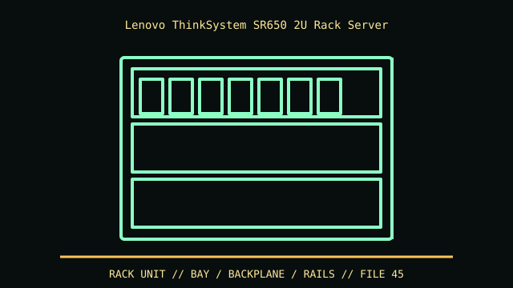

[ IDENTIFIED ENCLOSURE // THINKSYSTEM SR650 FIRST GENERATION (NOT V2/V3) ]
Lenovo ThinkSystem SR650 2U Rack Server
86.5 × 482 (with latches) × 763.7 mm (H × W × D); exclude bezel in stated depth and verify rack rear clearance.

VARIANT / ARCHIVAL CAVEAT: SR650 differs from SR650 V2/V3; firmware, backplane and riser are generation-specific. Identify machine type and riser/backplane assembly before part substitution.
Mechanical specifications and fit
| Catalog identity | ThinkSystem SR650 first generation (not V2/V3) |
|---|---|
| Dimensions and clearances | 86.5 × 482 (with latches) × 763.7 mm (H × W × D); exclude bezel in stated depth and verify rack rear clearance. |
| Drive bays / mounts | Supports up to 24 × 2.5-inch or 14 × 3.5-inch hot-swap configurations; AnyBay mixes SAS/SATA/NVMe only with matched backplane/cabling. |
| Board, system and compatibility | Lenovo-specific risers, AnyBay backplanes, adapters and rails; board/slot/drive combinations vary. PCIe GPU support depends on riser and PSU options. |
| Revision / identification | SR650 differs from SR650 V2/V3; firmware, backplane and riser are generation-specific. Identify machine type and riser/backplane assembly before part substitution. |
Preservation and installation notes
SR650 differs from SR650 V2/V3; firmware, backplane and riser are generation-specific. Identify machine type and riser/backplane assembly before part substitution.
Lenovo-specific risers, AnyBay backplanes, adapters and rails; board/slot/drive combinations vary. PCIe GPU support depends on riser and PSU options.
- Capture the complete model/SKU, serial/date label, board assembly and bay/backplane/riser identifiers before disassembly; keep matched screws, trays, carriers, feet and cables with the case.
- Check the cited manual's specific build option before transferring hardware. Published maximum GPU, drive, fan or radiator capacity may not be simultaneous when a removable cage or alternative riser occupies that volume.
- For rack and vintage systems, preserve the exact rails, shields, doors, brackets and model-specific safety instructions; do not infer compatibility from a familiar brand or physical connector shape.
Manufacturer manuals and archival sources
- Lenovo ThinkSystem SR650 official specificationsPrimary manufacturer or model-specific technical/manual reference used for the identification and mechanical data above.
- Lenovo ThinkSystem SR650 maintenance and product-guide PDFsSecond product manual, manufacturer resource or established technical archive; choose the exact regional SKU and revision.
When exact dimensions depend on configuration, the text says so; verify the measured specimen before making a fit or restoration decision.